library(tidyverse)
library(summarytools)
library(zoo)
library(psych)
library(viridisLite)
library(plotly)
knitr::opts_chunk$set(echo = TRUE, warning=FALSE, message=FALSE)Final Project - History of International Futbol (Soccer)
final_Project
Shaunak Padhye
International Soccer
Project
Introduction
The FIFA 2022 world cup saw some of the best soccer performances that we’ve ever seen, with Lionel Messi finally winning the most prestigious trophy in Soccer. It was a reminder as to why this sport is called the “Beautiful Game” and why so many people all over the world follow it. Soccer has a very rich history with experts saying that modern version began sometime during the 19th Century. This analysis aims to go over the history of International soccer and see what interesting inferences we can derive from the data. This analysis will begin with a brief introduction of the data and tidying of the data for the analysis. Then we will look at the following topics and try to answer a few questions:
Home Advantage Analysis: The dataset covers international games played from 1872 to 2022, allowing for an in-depth examination of the home advantage phenomenon. By analyzing team performances in home and away matches, I aim to identify the extent and significance of home advantage across different eras and regions.
Impact of Major World Events on Soccer: I will explore the influence of major world events, such as wars and economic crises, on international soccer. By examining the dataset within the context of historical events, we can uncover how these factors have shaped the sport’s development
Analysis of Penalties: Penalties have been a major part of the sport and I will demonstrate the impact penalties have on a match.
Describe the data set
Dataser link: https://www.kaggle.com/datasets/martj42/international-football-results-from-1872-to-2017?select=results.csv
For this project, I will be working with 151 years of International Soccer history: Results and Goal scorers dataset. The International Soccer dataset has 2 files - “results.csv” and “goalscorers.csv”. This dataset contains information about the International matches played from 1872 till 2023, and the players who scored the goals in these matches.
# Reading the data
goalscorers <- read_csv("ShaunakPadhye_FinalProjectData/goalscorers.csv")
results <- read_csv("ShaunakPadhye_FinalProjectData/results.csv")Lets start by looking at the results dataset.
# Dimensions of results dataset
dim(results)[1] 44557 9# Glimpse into the results dataset
str(results)spc_tbl_ [44,557 × 9] (S3: spec_tbl_df/tbl_df/tbl/data.frame)
$ date : Date[1:44557], format: "1872-11-30" "1873-03-08" ...
$ home_team : chr [1:44557] "Scotland" "England" "Scotland" "England" ...
$ away_team : chr [1:44557] "England" "Scotland" "England" "Scotland" ...
$ home_score: num [1:44557] 0 4 2 2 3 4 1 0 7 9 ...
$ away_score: num [1:44557] 0 2 1 2 0 0 3 2 2 0 ...
$ tournament: chr [1:44557] "Friendly" "Friendly" "Friendly" "Friendly" ...
$ city : chr [1:44557] "Glasgow" "London" "Glasgow" "London" ...
$ country : chr [1:44557] "Scotland" "England" "Scotland" "England" ...
$ neutral : logi [1:44557] FALSE FALSE FALSE FALSE FALSE FALSE ...
- attr(*, "spec")=
.. cols(
.. date = col_date(format = ""),
.. home_team = col_character(),
.. away_team = col_character(),
.. home_score = col_double(),
.. away_score = col_double(),
.. tournament = col_character(),
.. city = col_character(),
.. country = col_character(),
.. neutral = col_logical()
.. )
- attr(*, "problems")=<externalptr> We can see that the results dataset contains 44557 rows, which means that we contain data about 44557 matches.
This dataset has 9 variables: date - date of the match home_team - the name of the home team (country) away_team - the name of the away team (country) home_score - goals scored by the home team away_score - goals scored by the away team tournament - the name of the tournament city - the city where the match was played country - the country where the match was played neutral - TRUE/FALSE, whether the match was played at a neutral venue
Now, lets look at the Goal scorers data set.
# Dimensions of goalscorers dataset
dim(goalscorers)[1] 41008 8# Glimpse into the results dataset
str(goalscorers)spc_tbl_ [41,008 × 8] (S3: spec_tbl_df/tbl_df/tbl/data.frame)
$ date : Date[1:41008], format: "1916-07-02" "1916-07-02" ...
$ home_team: chr [1:41008] "Chile" "Chile" "Chile" "Chile" ...
$ away_team: chr [1:41008] "Uruguay" "Uruguay" "Uruguay" "Uruguay" ...
$ team : chr [1:41008] "Uruguay" "Uruguay" "Uruguay" "Uruguay" ...
$ scorer : chr [1:41008] "José Piendibene" "Isabelino Gradín" "Isabelino Gradín" "José Piendibene" ...
$ minute : num [1:41008] 44 55 70 75 2 44 60 62 67 75 ...
$ own_goal : logi [1:41008] FALSE FALSE FALSE FALSE FALSE FALSE ...
$ penalty : logi [1:41008] FALSE FALSE FALSE FALSE FALSE FALSE ...
- attr(*, "spec")=
.. cols(
.. date = col_date(format = ""),
.. home_team = col_character(),
.. away_team = col_character(),
.. team = col_character(),
.. scorer = col_character(),
.. minute = col_double(),
.. own_goal = col_logical(),
.. penalty = col_logical()
.. )
- attr(*, "problems")=<externalptr> The goal scorers dataset contains 41008 rows which suggests that 41008 goals were scored. This number is less than the number of games from the results dataset, which seems strange. We will explore this later in the analysis.
This dataset has 8 variables: date - date of the match home_team - the name of the home team (country) away_team - the name of the away team (country) team - name of the team that scored the goal scorer - name of player who scored the goal own_goal - whether the goal was an own goal penalty - whether the goal was a penalty
Tidy Data and Mutate Variables (as needed)
Now that we’ve looked at the datasets, lets check if it requires any tidying. We’ll start by checking if the datasets contain any duplicated rows.
# Checking for duplicates in results dataset
dim(results[duplicated(results),])[1] 0 9# Checking for duplicates in goalscorers dataset
dim(goalscorers[duplicated(goalscorers),])[1] 81 8Seems like we have 81 duplicated rows in the goal scorers dataset. Lets check the duplicates to investigate.
# Glimpse the duplicated rows in goalscorers dataset
glimpse(goalscorers[duplicated(goalscorers),])Rows: 81
Columns: 8
$ date <date> 1963-11-26, 1963-11-28, 1963-11-28, 1965-03-14, 1968-01-16,…
$ home_team <chr> "Ghana", "Ethiopia", "Nigeria", "Suriname", "Congo", "Ghana"…
$ away_team <chr> "Ethiopia", "Tunisia", "Sudan", "Trinidad and Tobago", "Ghan…
$ team <chr> "Ghana", "Ethiopia", "Sudan", "Suriname", "Ghana", "Ghana", …
$ scorer <chr> "Edward Acquah", "Mengistu Worku", "Nasr Eddin Abbas", "Edmu…
$ minute <dbl> NA, NA, NA, NA, NA, NA, NA, NA, NA, NA, NA, NA, NA, NA, NA, …
$ own_goal <lgl> FALSE, FALSE, FALSE, FALSE, FALSE, FALSE, FALSE, FALSE, FALS…
$ penalty <lgl> FALSE, FALSE, FALSE, FALSE, FALSE, FALSE, FALSE, FALSE, FALS…As we can see, the minute variable shows NA for all the duplicates. This means that for these matches the minute at which the player scored was not recorded. Therefore, if a player scored more than once in these games, their entries in the row would be duplicated. This issue should go once we handle the NA values.
Lets start by checking NA values in the results dataset.
# Check if results dataset has NA values
sum(is.na(results))[1] 0Now from the previous section we know that the goalscorers dataset contains NA values. Lets check how many NA values are present.
# Check if goalscorers dataset has NA values
sum(is.na(goalscorers))[1] 307Lets see what variables contain these NA values
# Checking NA values in each column
col <- colnames(goalscorers)
for (c in col){
print(paste0("NA values in ", c, ": ", sum(is.na(goalscorers[,c]))))
}[1] "NA values in date: 0"
[1] "NA values in home_team: 0"
[1] "NA values in away_team: 0"
[1] "NA values in team: 0"
[1] "NA values in scorer: 49"
[1] "NA values in minute: 258"
[1] "NA values in own_goal: 0"
[1] "NA values in penalty: 0"For the NA values in the minutes variable, we do not want to lose this data. For this reason we will replace the NA values with the mean of the minutes variable.
# Replacing NA values with mean value for minute column
goalscorers$minute <- na.aggregate(goalscorers$minute, FUN = mean)Since for a few entries the scorer variable is empty we don’t know who scored the goal. We can remove these rows from the dataset.
# Removing NA values from scorer column
goalscorers <- na.omit(goalscorers)# Checking if NA values removed successfully
sum(is.na(goalscorers))[1] 0The datasets have been cleaned and are ready for further processing.
Lets look at the variables in the results dataset.
# Columns in results dataset
colnames(results)[1] "date" "home_team" "away_team" "home_score" "away_score"
[6] "tournament" "city" "country" "neutral" We can see that we don’t have a variable to tell us which team won the match. We will introduce a new variable called result for this purpose.
# Adding result column in results dataset
results <- results %>%
mutate(result = case_when(
home_score > away_score ~ "Home Team",
home_score < away_score ~ "Away Team",
home_score == away_score ~ "Draw"
))
head(results[, c("date","home_team","away_team","home_score","away_score","result")])# A tibble: 6 × 6
date home_team away_team home_score away_score result
<date> <chr> <chr> <dbl> <dbl> <chr>
1 1872-11-30 Scotland England 0 0 Draw
2 1873-03-08 England Scotland 4 2 Home Team
3 1874-03-07 Scotland England 2 1 Home Team
4 1875-03-06 England Scotland 2 2 Draw
5 1876-03-04 Scotland England 3 0 Home Team
6 1876-03-25 Scotland Wales 4 0 Home TeamDescriptive Statistics
I’ll start by creating a summary of the results data sets using the summary function
# Summary of Results
summary(results) date home_team away_team home_score
Min. :1872-11-30 Length:44557 Length:44557 Min. : 0.000
1st Qu.:1979-06-29 Class :character Class :character 1st Qu.: 1.000
Median :1999-04-28 Mode :character Mode :character Median : 1.000
Mean :1992-08-13 Mean : 1.739
3rd Qu.:2011-06-04 3rd Qu.: 2.000
Max. :2023-03-29 Max. :31.000
away_score tournament city country
Min. : 0.000 Length:44557 Length:44557 Length:44557
1st Qu.: 0.000 Class :character Class :character Class :character
Median : 1.000 Mode :character Mode :character Mode :character
Mean : 1.178
3rd Qu.: 2.000
Max. :21.000
neutral result
Mode :logical Length:44557
FALSE:33480 Class :character
TRUE :11077 Mode :character
There are few interesting things to note from the above summary.
The first is that the first match in the data set was played on 30th November, 1872 and the latest match was played on 29th March, 2023.
The maximum number of goals scored by a Home Team is 31 and maximum goals scored by an Away Team is 21. These could be errors in the dataset or these matches could have had some extraordinary circumstances that allowed for such a feat.
Lets now look at the number of tournaments that have been occured in International soccer:
# Number of unique tournaments in results dataset
length(unique(results$tournament))[1] 142There is a wide variety of tournaments that have been played. Some of these tournaments might be region specific, some might be level specific. Qualifying tournamets such as World Cup Qualifiers are also counted.
Lets look at the distribution of the neutral variable using a bar chart.
# Plot for distribution of neutral variable
ggplot(results, aes(x = neutral)) +
geom_bar(fill = "steelblue") +
labs(title = "Distribution of Matches on Neutral Grounds",
x = "Neutral Ground",
y = "Count") +
theme_minimal() +
theme(plot.title = element_text(size = 16, face = "bold"),
axis.title = element_text(size = 12),
axis.text = element_text(size = 10))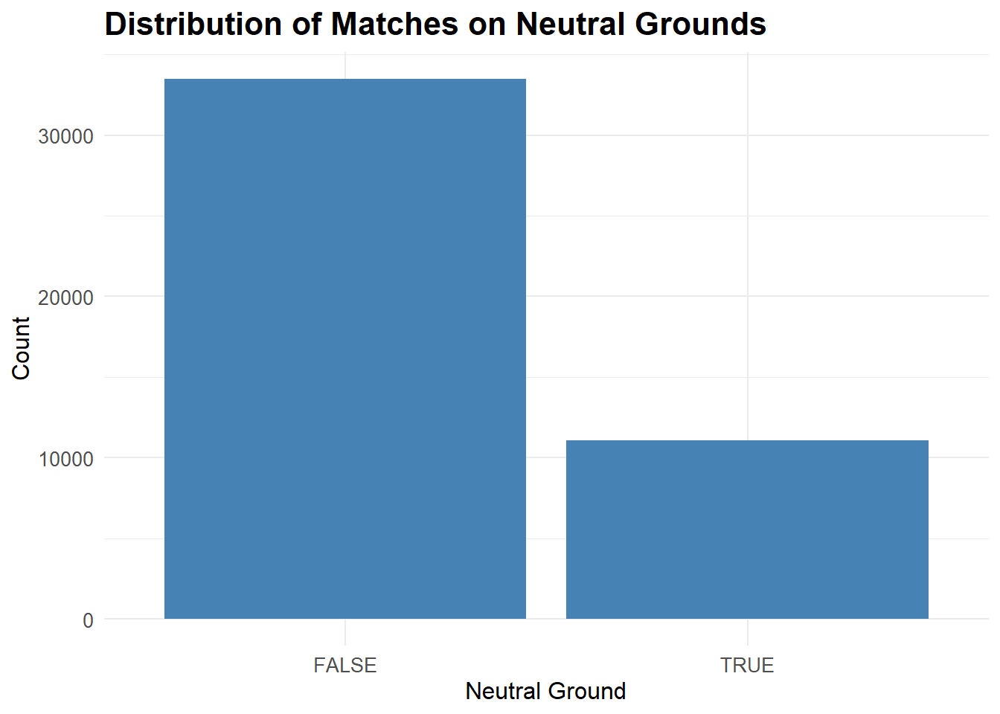
As we can see a small portion of the matches were played on neutral grounds and most of them were played either on the Home Team ground or the Away Team ground.
# Summary of goalscorers dataset
summary(goalscorers) date home_team away_team team
Min. :1916-07-02 Length:40959 Length:40959 Length:40959
1st Qu.:1985-10-30 Class :character Class :character Class :character
Median :2001-06-06 Mode :character Mode :character Mode :character
Mean :1996-09-29
3rd Qu.:2012-01-29
Max. :2022-12-18
scorer minute own_goal penalty
Length:40959 Min. : 1.00 Mode :logical Mode :logical
Class :character 1st Qu.: 28.00 FALSE:40241 FALSE:38274
Mode :character Median : 51.00 TRUE :718 TRUE :2685
Mean : 50.02
3rd Qu.: 73.00
Max. :122.00 For this dataset, the minimum year in the date variable is 1916. This explains the discrepancy between the dimensions of the two datasets. This dataset does not contain the data of the goal scorers for matches from 1872 till 1916.
Now, lets check the distribution of the minute variable to see at what minute in a match the most goals have been scored.
# Compute the frequency of the continuous variable
frequency_data <- goalscorers %>%
group_by(minute) %>%
summarize(frequency = n())
# Create a dataframe with the frequency data
frequency_df <- data.frame(
variable = frequency_data$minute,
frequency = frequency_data$frequency
)
# Create the line chart
ggplot(frequency_df, aes(x = variable, y = frequency)) +
geom_line(color = "steelblue", size = 1) +
labs(title = "Goals scored per Minute", x = "Minute", y = "Number of Goals") +
theme_minimal()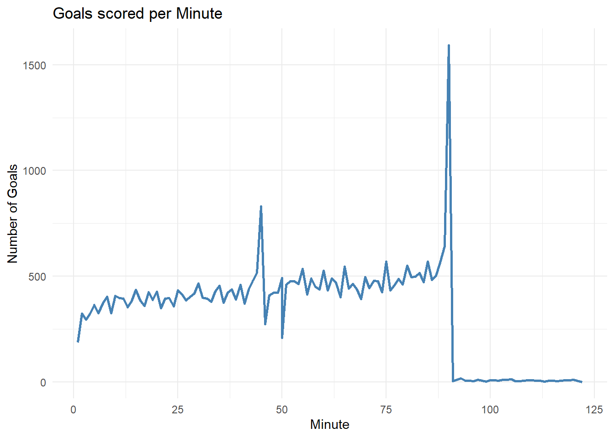
From the above plot we can see that we have two local maximas in the distribution. The first maxima occurs around the 45 minute mark which is when the first half in a soccer game ends. The second maxima occurs around the 90 minute mark, which is when a soccer match ends. This tells us that most goals are scored during critical sections in a match where the team might be in a make or break situation.
Visualization
Effect of Home Advantage
Now we will look at whether playing on a Home ground gives an advantage to the Home Team.
We’ll start by checking how many games have been played on a home ground rather than a neutral venue. This is controlled by the neutral variable in the results dataset.
# Number of games played on a home ground
dim(results %>%
filter(neutral == FALSE))[1] 33480 10A total of 33480 matches have been played on the home ground of a team rather than a neutral location.
Lets plot the distribution of wins for the result variable. This will allow us to see how many matches ended with the home team winning and how many for the away team and how many ended in a draw.
# Distribution of result of match based for matches played on Home Ground
results %>%
filter(neutral == FALSE) %>%
group_by(date,home_team,away_team) %>%
ggplot(aes(x = result, fill = result)) +
geom_bar() +
labs(title = "Results of matches played on Home Ground", x = "Result", y = "Count") +
theme_minimal() +
theme(
plot.title = element_text(size = 16, face = "bold"),
axis.title = element_text(size = 12),
axis.text = element_text(size = 10),
legend.title = element_blank(),
legend.text = element_text(size = 10)
)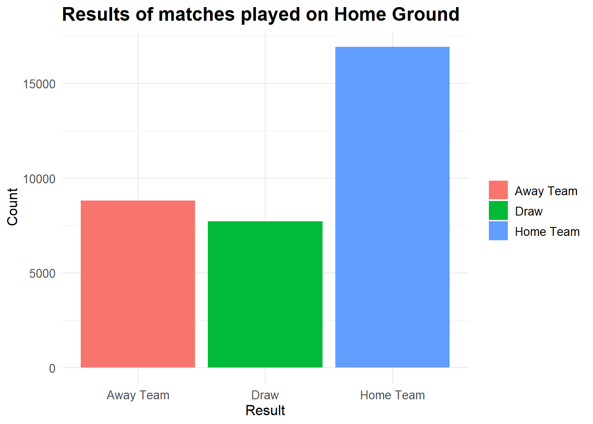
Here we can see that a significant portion (over half) of the wins come from Home Teams when they’re playing at their Home ground.
We’ll plot the same graph for neutral locations.
# Distribution of result of match based for matches played on neutral Ground
results %>%
filter(neutral == TRUE) %>%
group_by(date,home_team,away_team) %>%
ggplot(aes(x = result, fill = result)) +
geom_bar() +
labs(title = "Results of matches played on Neutral Ground", x = "Result", y = "Count") +
theme_minimal() +
theme(
plot.title = element_text(size = 16, face = "bold"),
axis.title = element_text(size = 12),
axis.text = element_text(size = 10),
legend.title = element_blank(),
legend.text = element_text(size = 10)
)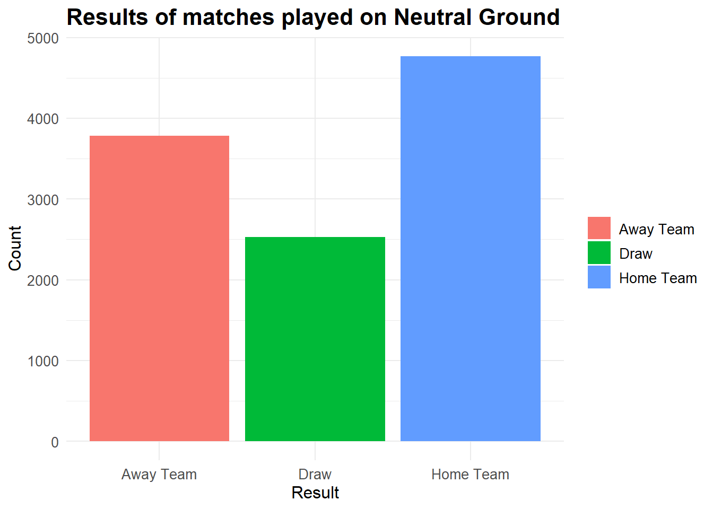
The difference between the number of wins for Home Team and Away Team is significantly less for matches played at a neutral venue.
We’ll now check if this trend has been followed throughout various decades.
# Distribution of result by decade for matches played on Home ground
results %>%
filter(neutral == FALSE) %>%
mutate(decade = floor(year(date) / 10) * 10) %>%
group_by(decade, result) %>%
count() %>%
ggplot(aes(x = factor(decade), y = n, fill = result)) +
geom_bar(position = "fill", stat = "identity") +
labs(title = "Distribution of Game Results by Decade",
x = "Decade",
y = "Proportion") +
scale_fill_viridis_d(option = "viridis", begin = 0.1, end = 0.9) +
theme_minimal()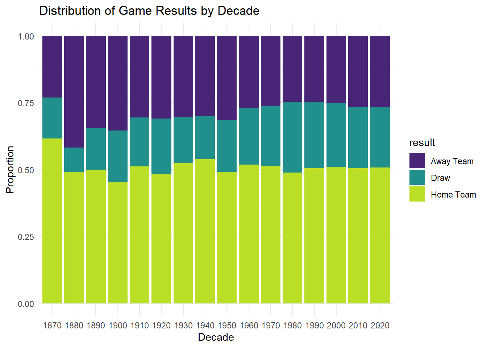
We can see that a similar distribution has been observed over the decades. This is surprising as due to the ease of travel in the modern age, fans and supporters can travel to support their countries in International games. We would expect this distribution to slightly even out, but this doesn’t seem to be the case.
One possible explanation for this is that the number of matches being played per decade has drastically increased as we can see in the graph below. Due to the sheer volume of games being played it is difficult for fans to go to all the matches their country is playing.
# Number of games played per decade
results %>%
filter(neutral == FALSE) %>%
mutate(decade = floor(year(date) / 10) * 10) %>%
group_by(decade) %>%
count() %>%
ggplot(aes(x = factor(decade), y = n, fill = n)) +
geom_bar(stat = "identity") +
labs(title = "Number of Games Played by Decade",
x = "Decade",
y = "Number of Games") +
theme_minimal()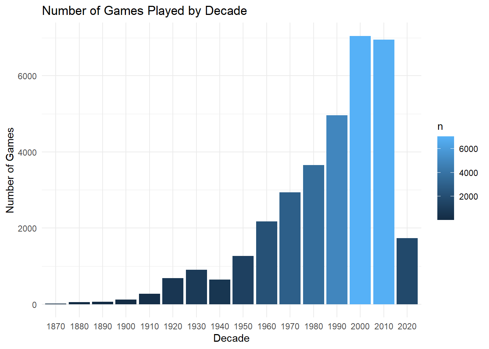
We can check which teams have been most successful as the Home Team.
results %>%
filter(result == "Home Team" & neutral == FALSE) %>%
group_by(home_team) %>%
summarize(total_wins = n()) %>%
arrange(desc(total_wins)) %>%
top_n(10) %>%
mutate(rank = dense_rank(desc(total_wins))) %>%
ggplot(aes(x = reorder(home_team, total_wins), y = total_wins, fill = rank)) +
geom_bar(stat = "identity") +
labs(title = "Top 10 Countries with Most Wins as Home Team",
x = "Country",
y = "Total Wins") +
scale_fill_gradientn(colors = viridisLite::viridis(n = 10, option = "A", begin = 0.2, end = 0.8)) +
theme_minimal() +
theme(plot.title = element_text(size = 16, face = "bold"),
axis.title = element_text(size = 12),
axis.text = element_text(size = 10),
axis.text.x = element_text(angle = 45, hjust = 1)) +
guides(fill = FALSE) +
coord_flip()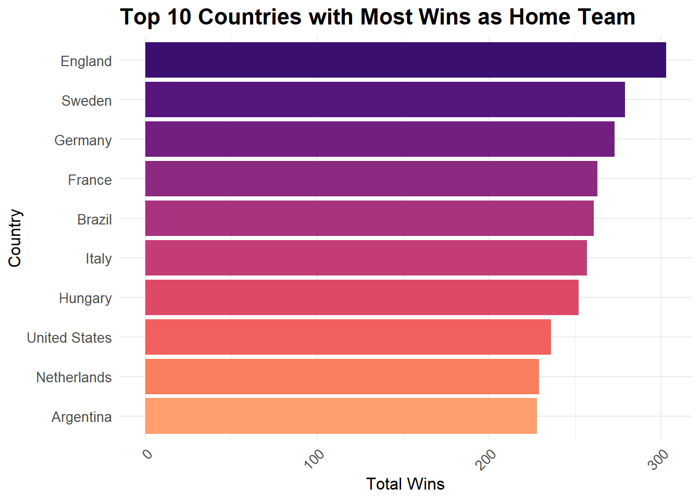
From the above graph, we see a lot of expected countries, which have a very rich soccer culture such as England, Germany, France, Italy and Brazil. There are a few surprises as well such as Hungary and the United States.
Conversely, we can check which teams have been most successful as the Away Team.
results %>%
filter(result == "Away Team" & neutral == FALSE) %>%
group_by(home_team) %>%
summarize(total_wins = n()) %>%
arrange(desc(total_wins)) %>%
top_n(10) %>%
mutate(rank = dense_rank(desc(total_wins))) %>%
ggplot(aes(x = reorder(home_team, total_wins), y = total_wins, fill = rank)) +
geom_bar(stat = "identity") +
labs(title = "Top 10 Countries with Most Wins as Away Team",
x = "Country",
y = "Total Wins") +
scale_fill_gradientn(colors = viridisLite::viridis(n = 10, option = "A", begin = 0.2, end = 0.8)) +
theme_minimal() +
theme(plot.title = element_text(size = 16, face = "bold"),
axis.title = element_text(size = 12),
axis.text = element_text(size = 10),
axis.text.x = element_text(angle = 45, hjust = 1)) +
guides(fill = FALSE) +
coord_flip()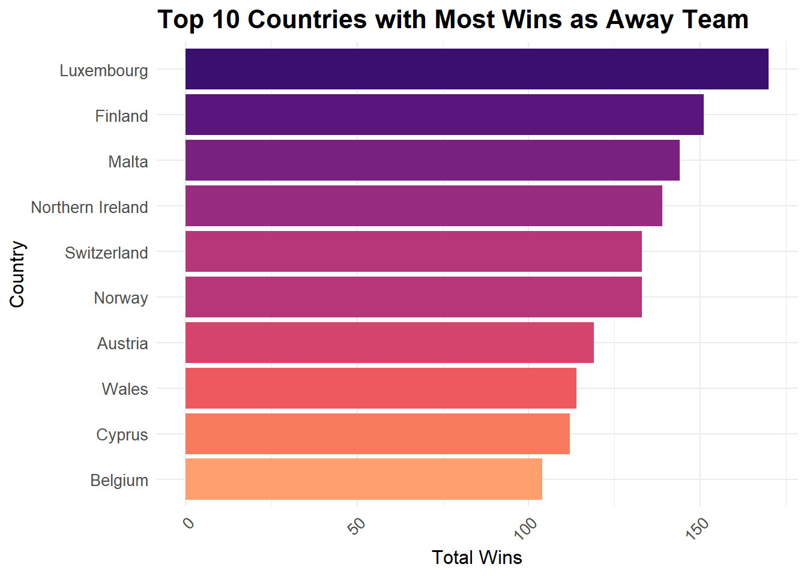
These results are surprising as most of these countries aren’t known for soccer. You might expect a country having more successful away record being one of the top ranked soccer nations but the result above disabuses us of this notion.
We can check the same result for matches played on neutral grounds. For this we will have to modify the results dataset. The teams playing in each match are split into two variables: Home Team and Away Team. Since we want to group by “team”, we will need to pivot the home_team and away_team into a single variable called “team”. This will allow us to group the data set by team.
result_pivoted <- results %>%
pivot_longer(cols = c(home_team, away_team), names_to = "team_type", values_to = "team") %>%
mutate(team_type = ifelse(team_type == "home_team", "Home Team", "Away Team"))
head(result_pivoted[, c("date","home_score","away_score","result","team_type","team")])# A tibble: 6 × 6
date home_score away_score result team_type team
<date> <dbl> <dbl> <chr> <chr> <chr>
1 1872-11-30 0 0 Draw Home Team Scotland
2 1872-11-30 0 0 Draw Away Team England
3 1873-03-08 4 2 Home Team Home Team England
4 1873-03-08 4 2 Home Team Away Team Scotland
5 1874-03-07 2 1 Home Team Home Team Scotland
6 1874-03-07 2 1 Home Team Away Team England result_pivoted %>%
filter(result == team_type & neutral == TRUE) %>%
group_by(team) %>%
summarize(total_wins = n()) %>%
arrange(desc(total_wins)) %>%
top_n(10) %>%
mutate(rank = dense_rank(desc(total_wins))) %>%
ggplot(aes(x = reorder(team, total_wins), y = total_wins, fill = rank)) +
geom_bar(stat = "identity") +
labs(title = "Top 10 Countries with Most Wins on Neutral grounds",
x = "Country",
y = "Total Wins") +
scale_fill_gradientn(colors = viridisLite::viridis(n = 10, option = "A", begin = 0.2, end = 0.8)) +
theme_minimal() +
theme(plot.title = element_text(size = 16, face = "bold"),
axis.title = element_text(size = 12),
axis.text = element_text(size = 10),
axis.text.x = element_text(angle = 45, hjust = 1)) +
guides(fill = FALSE) +
coord_flip()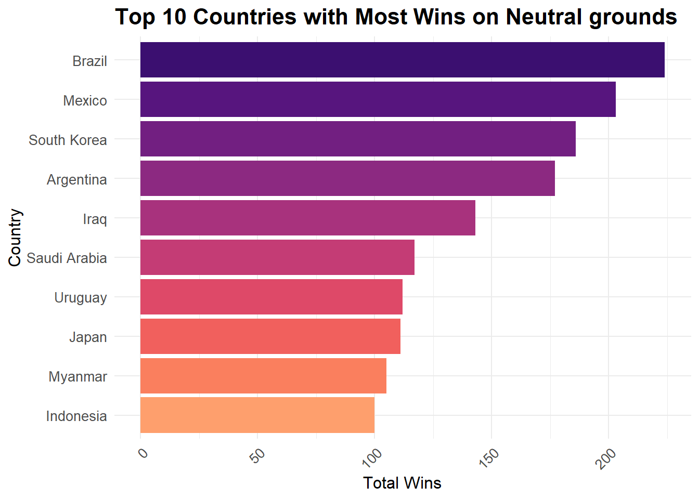
Again we see a few expected countries and few unexpected ones. A possible explanation for countries like Iraq, Saudi Arabia, Indonesia is the political climate in these countries might have prevented them from playing matches at home. For this reason a neutral venue might have been arranged for all those game which might have otherwise been played at their home ground.
Impact of historical events
Now we will investigate the impact of major world events on International Soccer.
We’ll start by plotting a line chart for number of matches played per year over time.
results %>%
group_by(year = lubridate::year(date)) %>%
summarize(matches = n()) %>%
filter(year < 2023) %>%
ggplot(aes(x = year, y = matches)) +
geom_line(color = "steelblue", size = 1) +
labs(title = "Number of Matches Played per Year", x = "Year", y = "Matches") +
scale_x_continuous(breaks = seq(1870, 2020, by = 10)) +
theme_minimal()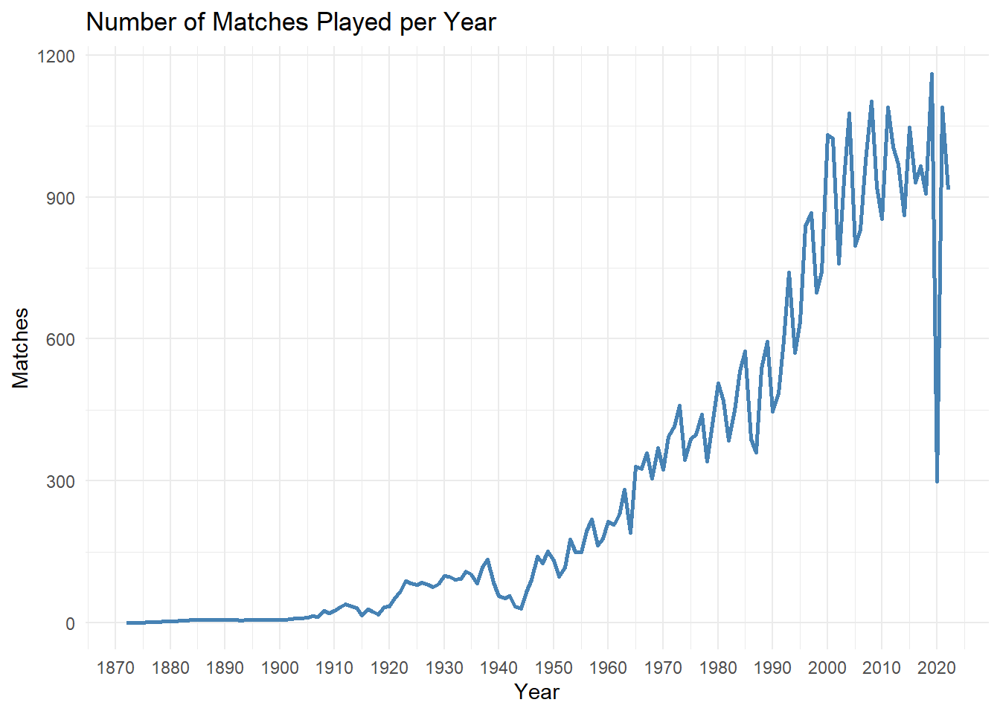
We can see from the above graph that there is a general increasing trend in the number of matches played. We will divide the time frame into two parts 1872 to 1950 and 1950 to 2022. We are doing this to examine the trends with more focus.
We will start with examining the data from 1872 to 1950.
results %>%
group_by(year = lubridate::year(date)) %>%
summarize(matches = n()) %>%
filter(year < 1950) %>%
ggplot(aes(x = year, y = matches)) +
geom_line(color = "steelblue", size = 1) +
labs(title = "Number of Matches Played per Year", x = "Year", y = "Matches") +
scale_x_continuous(breaks = seq(1870, 1950, by = 5)) +
theme_minimal()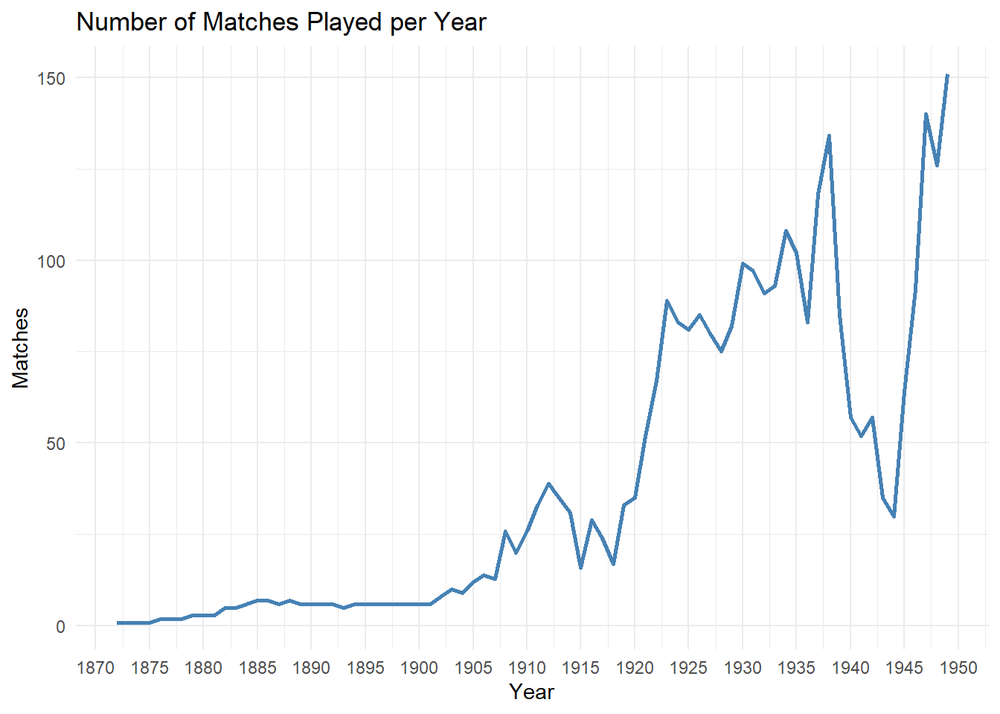
In the above graph, we can see that there are two significant dips in the number of matches being played. These dips (minima) correspond to the years when the two World Wars happened. As we’d expect the World Wars upset the entire balance in global geo-political situation and the number of soccer matches being played also decreased.
Similarly, we will check the trend for years 1950 to 2022.
results %>%
group_by(year = lubridate::year(date)) %>%
summarize(matches = n()) %>%
filter(year > 1950 & year < 2023) %>%
ggplot(aes(x = year, y = matches)) +
geom_line(color = "steelblue", size = 1) +
labs(title = "Number of Matches Played per Year", x = "Year", y = "Matches") +
scale_x_continuous(breaks = seq(1950, 2022, by = 5)) +
theme_minimal()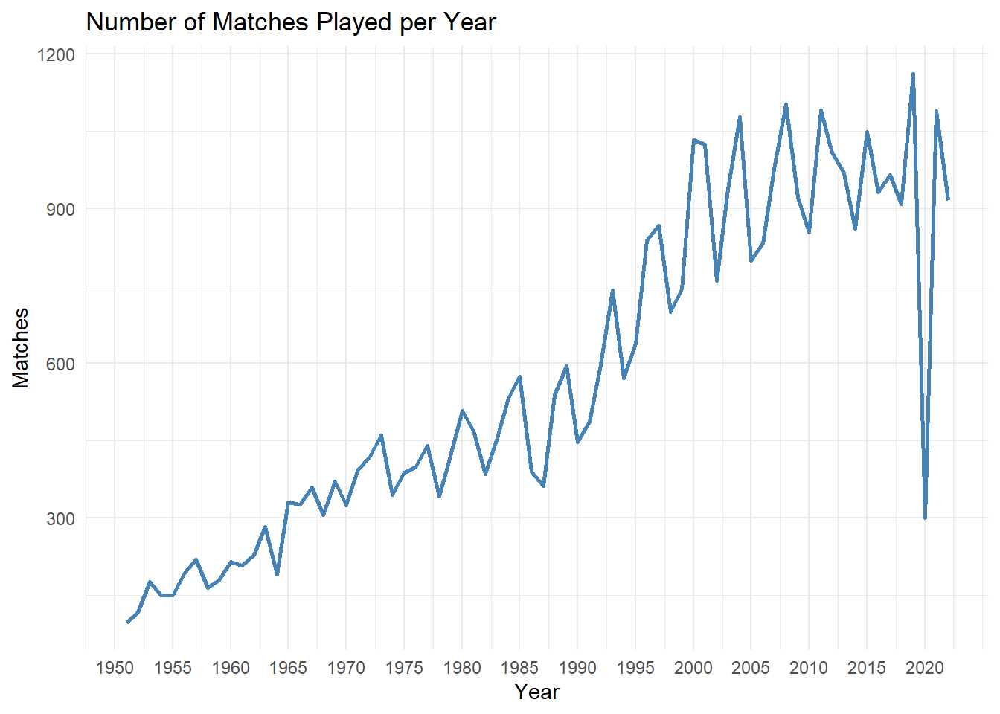
We can see a general increasing trend for the above graph. There are a lot of local maximas and minimas in this graph. The local maximas correspond to when most of the major International tournaments are played. For example, the World Cup is played every 4 years.
We see a massive decrease in the number of matches played for the year 2020. This is the year when the Covid 19 pandemic struck the world and everyone was forced to quarantine. As expected even soccer felt the ramifications of this.
The trend from years 1950 till 1980 is very erratic. These were the years when there was Cold War going on between the United States of America and Russia, which might be one of the reasons for that trend.
Analysis of Penalties
Finally we will look at Penalties and see how they affect the game. Penalties are given to a team if they are fouled near the opponent’s goal. The team then gets the opportunity to score goal from a certain distance with only the goal keeper in the way. Penalties are also used as deciders in case a match ends up as a draw.
Lets see which countries have been most successful at scoring penalties.
# Group by and summarize goalscorers dataset to find out top 10 teams with most penalties
penalty_analysis <- goalscorers %>%
filter(penalty == TRUE) %>%
group_by(team) %>%
summarize(total_penalties = n()) %>%
arrange(desc(total_penalties)) %>%
top_n(10)
# Print the top 10 teams with the most penalties
print(penalty_analysis)# A tibble: 10 × 2
team total_penalties
<chr> <int>
1 Brazil 64
2 Mexico 60
3 Argentina 58
4 Netherlands 52
5 Spain 52
6 Germany 51
7 England 50
8 Sweden 50
9 Denmark 47
10 Uruguay 46# Create a bar chart of the top 10 teams with the most penalties
ggplot(penalty_analysis, aes(x = reorder(team, total_penalties), y = total_penalties)) +
geom_bar(stat = "identity", fill = "steelblue") +
labs(title = "Top 10 Teams with the Most Penalties",
x = "Team",
y = "Total Penalties") +
theme_minimal()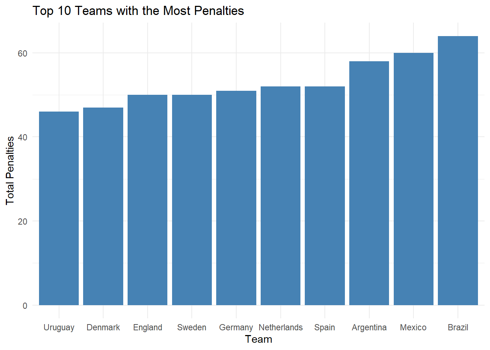
Now we’ll check how penalties affect the outcome of a game. For this analysis we will have to merge the results and the goalscorers datasets. This because the match outcome data is stored in the results dataset and the penalty data is stored in the goalscorers dataset. We can uniquely identify a match based on the date and the two teams that played the game. We will join the two datasets using these three variables.
# Merging results and goalscorers datasets
merged_results <- merge(results,goalscorers , by = c("date", "home_team", "away_team"))
head(merged_results) date home_team away_team home_score away_score tournament
1 1916-07-02 Chile Uruguay 0 4 Copa América
2 1916-07-02 Chile Uruguay 0 4 Copa América
3 1916-07-02 Chile Uruguay 0 4 Copa América
4 1916-07-02 Chile Uruguay 0 4 Copa América
5 1916-07-06 Argentina Chile 6 1 Copa América
6 1916-07-06 Argentina Chile 6 1 Copa América
city country neutral result team scorer minute
1 Buenos Aires Argentina TRUE Away Team Uruguay José Piendibene 44
2 Buenos Aires Argentina TRUE Away Team Uruguay Isabelino Gradín 55
3 Buenos Aires Argentina TRUE Away Team Uruguay Isabelino Gradín 70
4 Buenos Aires Argentina TRUE Away Team Uruguay José Piendibene 75
5 Buenos Aires Argentina FALSE Home Team Argentina Alberto Ohaco 2
6 Buenos Aires Argentina FALSE Home Team Chile Telésforo Báez 44
own_goal penalty
1 FALSE FALSE
2 FALSE FALSE
3 FALSE FALSE
4 FALSE FALSE
5 FALSE FALSE
6 FALSE FALSELets look at the impact of penalties on the outcome of matches.
We will calculate the number of games where the home team scored a penalty and won the game and the number of games where the home team scored a penalty but lost the game. Then we will create a pie chart to show the results.
# Number of penalties scored by home team where Home team won the match
home_penalties <- merged_results %>%
filter(penalty & home_team == team & result == "Home Team") %>%
nrow()
home_penalties[1] 1237# Number of penalties scored by home team where Away team won the match
home_penalties_l <- merged_results %>%
filter(penalty & home_team == team & result == "Away Team") %>%
nrow()
home_penalties_l[1] 225# Adding data to a dataframe
data <- data.frame(category = c("Wins with Penalty", "Losses with Penalty"),
count = c(home_penalties, home_penalties_l))
# Creating the pie chart
ggplot(data, aes(x = "", y = count, fill = category)) +
geom_bar(width = 1, stat = "identity") +
coord_polar(theta = "y") +
labs(title = "Penalties Distribution",
fill = "Category",
x = NULL, y = NULL) +
theme_void() +
theme(plot.title = element_text(hjust = 0.5))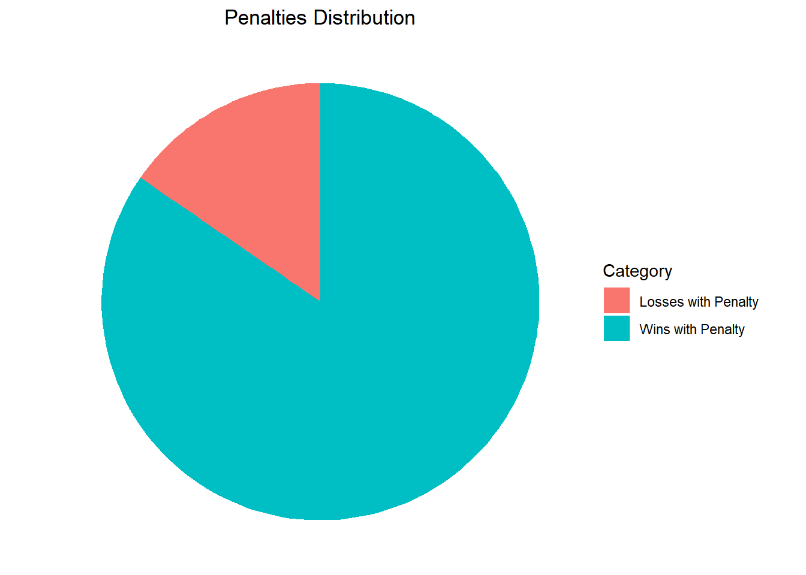
As we can see, matches where a team took a penalty, most likely that team ended up winning the match.
Conclusion and Reflection
The visualizations in the “Home Advantage” section provide validation that playing at a home ground does provide an advantage to the Home Team. However, I don’t believe this is a bad thing. Fans of the sport are very passionate about the teams that they support and having their team play in their home ground allows these fans to show their support. At the same time these tournaments should be scheduled so that some teams aren’t getting an unfair advantage in the overall tournament. It would be interesting to see how players individually are impacted by playing at home or away and if we could classify players accordingly.
In the second part of the analysis, I got the same results as expected. Soccer is majorly impacted by World events such as Wars and Pandemics. But the sport is also able to recover from this. As we can see the sport has grown a lot in 150 years. A similar analysis for a single country might be able to give us an insight on how the socio-political conditions there affect their participation in International Soccer.
Finally, we did a brief analysis of penalties. We can surmise that penalties play a major role in deciding the outcome of games. There has been a lot of debate regarding alternatives to penalties to make the game more balanced. I believe that having the threat of giving away a penalty keeps the defenders of the teams in check as they risk losing a goal.
Bibliography
International Soccer dataset: https://www.kaggle.com/datasets/martj42/international-football-results-from-1872-to-2017?select=results.csv
History of Football (Soccer): https://www.footballhistory.org/
Key events of the 20th century: https://en.wikipedia.org/wiki/Key_events_of_the_20th_century
R Language as programming language
Wickham, H., & Grolemund, G. (2016). R for data science: Visualize, model, transform, tidy, and import data. OReilly Media.
The R Graph Gallery-https://r-graph-gallery.com/